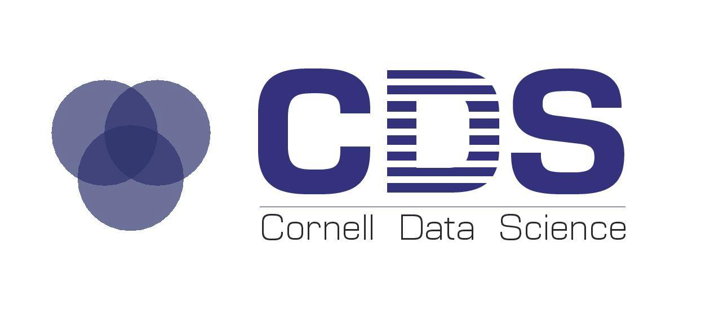

Professional
Numenta
Algorithms Intern
May 2015 – August 2015
- Allowed users to create custom C++ and Python regions with nupic
- Made a region for pooling temporal data called a Union Pooler
- Worked on the NLP framework and created multiple models to test our performance
- Curated text data and designed a hierarchy
- Updated the Python build and pipeline for nupic so that we could eventually support other languages and Windows
- Analyzed seismic data for early earthquake prediction
- Created a phonology based encoder for letters that could later be used for speech synthesis

Blackbird Technologies
Artificial Intelligence Intern
May 2014 – August 2014
- Worked on detecting the dominant color in an image, using decision trees and support vector machines
- Implemented a spatial pyramid to improve image classification
- Implemented soft k-means to handle ambiguity between the categories
- Created an autocropper to crop rotated images
- Incorported PCA in the pipeline to reduce the dimension of the feature vectors
- Created a parts of speech tagger to identify the title, using NLTK
- Modified the hashing function to account for the bias caused by hashing collisions
- Annotated images
- Tested the classifiers

Ancient Wisdom Productions
iOS Programming Intern
April 2013 – December 2013
- Added new features to a prexisting application, Piction
Anthrotronix, Inc
Software Engineering Intern
May 2013 – August 2013
- Software testing
- Researched and did basic Android programming
- Worked with Matlab for data analysis
- Used Python and OpenCV for object detection
- Made a game called Tap Tap Rehabilitation for a Maker's Fair
- Made a version of Tetris using Processing for the Makey Makey
Teaching

CS 4780: Machine Learning
Head Teaching Assistant
August 2015 – December 2015
Professor Kilian Weinberger
- Hold office hours
- Grade homeworks and exams
- Monitor Piazza and answer questions
- Scribe for lecture notes
- Update projects

Cornell Data Science
Education Lead
December 2014 – December 2015
- Organize a 5 hour crash course for 60 students on Data Science
- Hold weekly educational sessions
- Attend e-board meetings and assist in club development
CS 4670: Computer Vision
Teaching Assistant
January 2015 – May 2015
Professor Kavita Bala
- Held office hours
- Graded homeworks and exams
- Monitored Piazza and answer questions
- Ported the projects from C++ to Python
MATH 1110: Calculus I
Course Assistant
August 2013 – December 2013
Professor Daina Taimina
- Graded homework
- Held study sessions and helped students with their class work
Relevant Coursework
Computer Science Courses
M. Eng
- CS 5150 - Software Engineering
- CS 4775 - Computational Genetics
- CS 7090 - Computer Science Colloquium
Junior Year
- CS 4820 - Introduction to Algorithms (LaTeX)
- CS 4786 - Machine Learning for Data Science (Python, Matlab, & R)
- CS 7790 - Seminar in Artificial Intelligence
- INFO 1300 - Introductory Design and Programming for the Web (HTML, CSS, Javascript, & PHP)
- CS 4300 - Information Retrieval (Java & Python)
- CS 4410 - Operating Systems (Python & C)
- CS 4780 - Machine Learning (Python)
- CS 4701 - Practicum in Artificial Intelligence (Python)
- CS 4700 - Foundations of Artificial Intelligence
Sophomore Year
- CS 2043 - Unix Tools and Scripting (Bash Scripts & Python)
- CS 3410 - Computer System Organization and Programming (Logisim & C)
- CS 2024 - C++ Programming (C++)
- CS 3110 - Data Structures and Functional Programming (Ocaml)
- CS 4670 - Introduction to Computer Vision (C++)
Freshman Year and HS
- CS 2800 - Discrete Structures
- CS 2048 - Introduction to iPhone Application Development (Objective C)
- CS 2110 - Object Oriented Programming and Data Structures (Java)
- CS 1110 - Introduction to Computer Programming with Python (Python)
In high school, I took AP Computer Science (Java)
Math Courses
Senior Year
- MATH 4710 - Basic Probability
- MATH 3230 - Introduction to Differential Equations
Junior Year
- STCSI 2100 - Introduction to Statistics
Sophomore Year
- CS 4850 - Mathematical Foundations for the Information Age
- MATH 3360 - Applicable Algebra
- MATH 4130 - Honors Introduction to Analysis I
Freshman Year and HS
- MATH 4370 - Computational Algebra
- MATH 4550 - Applicable Geometry
- MATH 2940 - Linear Algebra
In high school, I took AP Calculus BC and Multivariable calculus
Linguistics Courses
- LING 1101 - Introduction to Linguistics
- LING 4485 - Topics in Computational Linguistics (Matlab & Python)